Aprender a aprender es de las cosas más complicadas. Estamos en un punto donde un solo ser humano no puede aprender todo! Simplemente no se puede, por ende la única estrategia que realmente es válida para triunfar en nuestro mundo moderno, es nunca parar de aprender.
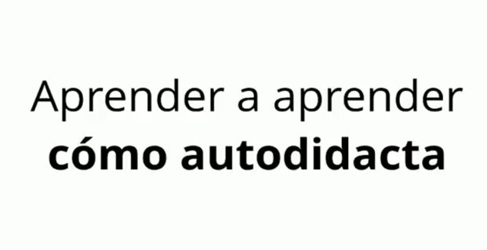Hay otra estrategia, es la estrategia de rendirse y decir «no», «Yo hago solamente una cosa y ya». Esta estrategia no funciona, esta estrategia aparte de ser relativamente mediocre, lo que va a hacer, es que cada vez que haya un cambio radical que haga que todo cambie, que las cosas sean nuevas, tú no te vas a poder adaptar.
Pensá en lo que paso con las personas que aprendieron mucho de marketing tradicional y de repente se dan cuenta que el marketing digital es donde está todo, las personas que decidieron invertir todo lo que tenían en ilustración para impresos y resulta que la ilustración digital es donde más está el dinero, estas cosas pueden pasar y no se trata solamente de dinero aunque en cierto modo la gran mayoría de esto es como ganamos dinero con lo que nos hace felices.
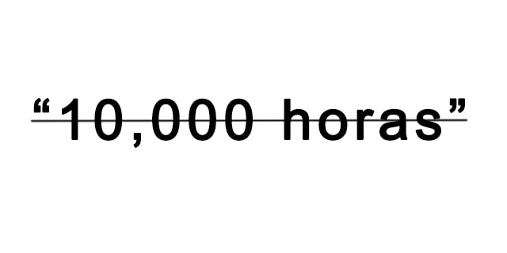Hoy te quiero hablar de esto. te quiero hablar primero que todo, de uno de los mitos más fuertes, que toma diez mil horas aprender algo, esto lo invento Malcolm Gladwell en un libro que se llama Outliers. (Puedes Obtenerlo Gratis haciendo click aqui)
Bueno… no se lo inventó, lo acuñó, pero resulta que es mentira! todo este cuento de las diez mil horas fue porque se trataron de analizar cuánto le toma a Roger Federer ser un experto en tenis y ser el mejor jugador de tenis del mundo y son 10.000 horas de aprendizaje y seguro si quieres ser Roger Federer eso puede ser real.
Pero la realidad es que cuando la gente ve este cuento de las 10.000 horas para volverse un maestro de algo, lo que realmente termina pasando es que se decepcionan y dicen, «na! eso no es para mí».
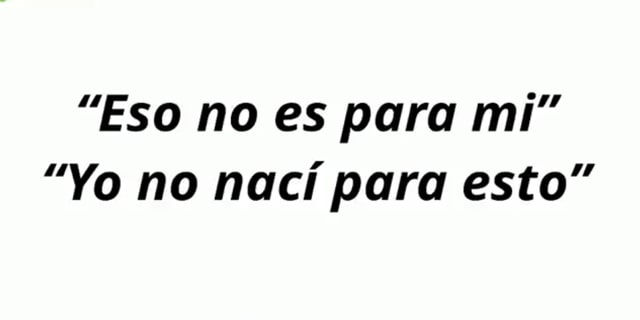Pero lo que quiero, es evitar que tú piensen esto, porque aquí es donde se muere el aprendizaje, él aprendizaje se muere cuando la gente dice, “esto no es para mí” cuando la gente dice “yo no nací para esto”, eso es mentira! Todo es posible! Todo el mundo puede todo!.
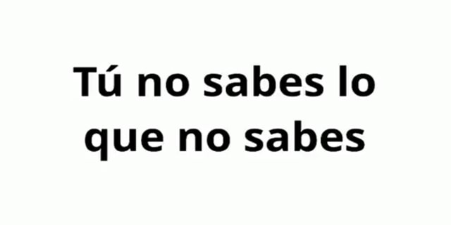Arrancamos por aceptar una realidad. Cuando queremos aprender algo nuevo como autodidactas, hay que aceptar que uno no sabe lo que no sabe, tú no sabes lo que no sabes, esto es difícil de entender al principio, pero aceptarlo hace que las cosas sean más sencillas.
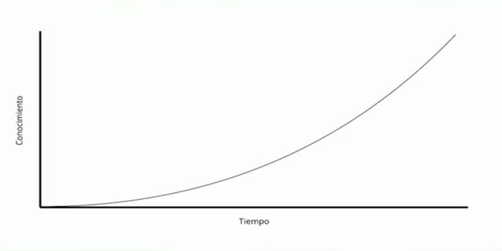Uno no sabe lo que no sabe porque a uno le venden sobre todo el sistema educativo tradicional que la curva de aprendizaje es así (imagen de arriba), que uno con el pasar del tiempo mientras uno no se rinda y vaya aprendiendo, el conocimiento se va mejorando y se va mejorando y se va mejorando, pero resulta que así no luce la curva.
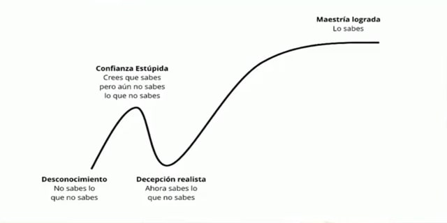La curva normalmente luce así (imagen de arriba). Ustedes arrancan por el desconocimiento, no saben lo que no saben y luego empiezan a obtener contexto empiezan a hablar con gente, las personas empiezan a decir, no… mira es por acá… y por acá… entonces creen que están creciendo un montón y eso los lleva a un momento muy complicado, que es el momento de la confianza estúpida, donde creen que saben pero aún no saben lo que no saben.
Esa confianza estúpida tiene un problema, es que cuando se llenan de este ego personal de «yo lo puedo todo», eventualmente se dan cuenta de lo que implica aprender, llegan a uno de los pedazos más difíciles que es la decepción realista, ahora sabes lo que no sabes, si ustedes logran superar esa decepción realista y no se rinden, la curva se pone mucho más dura, pero luego se pone más fácil y ahí es cuando ustedes logran la maestría, cuando ustedes saben!
Por ejemplo ustedes no saben que uno de los elementos núcleo de la inteligencia artificial es el álgebra lineal, y se que para muchos de ustedes al leer la palabra “álgebra” inmediatamente dijeron, “no… yo no sirvo para eso, yo soy más de letras yo soy más de dibujo, yo… es que soy una persona del lado izquierdo del cerebro” que por cierto es bulshit, ambos lados del cerebro hacen cosas constantemente y no es que hay un lado creativo y un lado analítico eso se lo invento no sé quién para vender homeopatía, es bulshit!
Cuando ustedes se enfrentan con «uff es álgebra», «uff es que tengo que aprender matemáticas»,»uff es que tengo que aprender a escribir y yo no sirvo para escribir», ese momento, en la decepción realista es donde las personas se rinden, donde no aprenden.
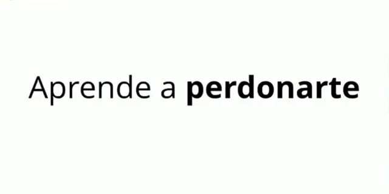Para poder ser autodidacta la habilidad más importante que tienes que aprender es a perdonarte, es a darte permiso de apestar, no de no bañarte, hay que bañarse todo los días 🤭, pero date permiso de apestar en lo que sea que quieras aprender, date permiso de ser malo en la actividad que estás haciendo.
Quieres aprender a dibujar, pero te da pena que tus dibujos son súper feos, date permiso de dibujar feo, porque esa es la fórmula que todos arrancamos para eventualmente dibujar bonito, crees que no sirves para la jardinería porque no entiendes cómo funciona este cuento de semilla-árbol, date permiso de arruinar los primeros intentos para eventualmente tener un jardín increíble.
La mejor metodología del mundo, que es la metodología que usan algunas plataformas online en sus cursos como por ejemplo Platzi, se llama aprendizaje para la maestría (Mastery Learning) en resumen es muy sencillo, la educación tradicional se divide entre aptitud para algo y los logros, aptitud es del talento nato que tenemos para ciertas cosas y logros es lo que se logra después de aprender, y esto se divide en una curva normal a lo largo de todos los estudiantes.
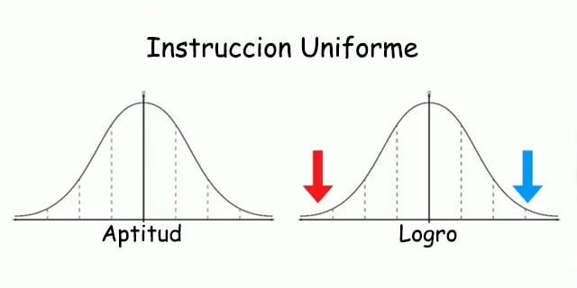Imagina que esta es la cantidad de estudiantes que normalmente están en un curso, normalmente en el punto más bajo de la curva está la gente tonta, la que no puede con nada la que no entiende que no le entra en la cabeza el conocimiento, esos son los que están en la flechita roja y del otro lado también hay un porcentaje muy pequeñito, equivalente el porcentaje de la gente tonta, que es la gente brillante, a los que les sale todo súper bien, los que logran cosas magníficas.
Pero ¿dónde está la mayor cantidad la gente? Pues en la mitad, en el área de decepción, mediocridad y resultados tibios, donde la gente pasa ráspano, lamentablemente este es un método adaptado a dos cosas que simplemente fueron inventadas por la revolución industrial y no tiene nada que ver con como nuestro cerebro funciona.
Uno, es el hecho de que el aprendizaje es por ciclos de un año y si usted no aprendió jodase y luego otro año y luego otro año y luego otro año. Y la segunda es que, la forma de medir que tú sabes algo es a través de notas, esto es un artefacto artificial de la sociedad, no existen nada que diga que si tú no aprendes en primero de primaria lo que necesitabas, en segundo de primaria no lo podrás aprender. No!
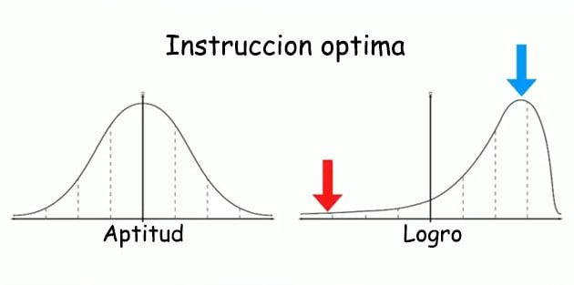Lo que pasa es que así se les paga a los profesores, siempre era un profesor con un grupo de estudiantes, no había otra forma de hacerlo escalable, pero ahora existe educación online efectiva y gracias a eso tenemos instrucción óptima y con la instrucción óptima podemos llevar a cualquier persona a maestría.
Y sí, siempre va haber gente que no puede con esto, pero esto es simplemente porque si él coeficiente intelectual promedio de la humanidad es 100 y los genios están en 120, hay personas que están en 80 y eso está bien! Hay otras rutas para ellos.
Te puedo adelantar que si tú estás leyendo este articulo, tú no estás del lado izquierdo del 100, tú estás del lado derecho del 100 porque tienes de manera inherente una necesidad de aprender o mejorar como autodidacta.
Por ende si tú estás leyendo este articulo, aunque tú no lo creas, porque tú te saboteas mentalmente todo el tiempo, tú realmente eres parte del porcentaje de la humanidad que puede lograr cosas increíbles, si nó, no estarías leyendo estas palabras en este momento y si tú no vas a creer en esto, cree en mí, que creo en ti, porque nadie más lo va a hacer.
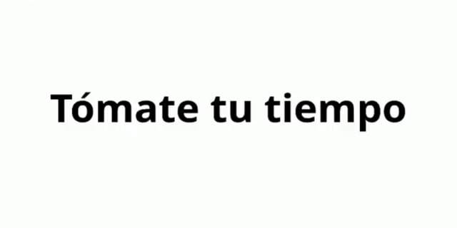El principal elemento es tomarte tu tiempo, esto es muy difícil, porque todo el sistema nos dice que la cosa no es así, todo el sistema nos dice que si uno no aprenden en cinco años una carrera, uno es idiota y eso es mentira.
Imagina que tienes que aprender html, css, y javascript que son las tres tecnologías núcleo del desarrollo web, hay personas que les toma un año aprender html porque no les entra en la cabeza y de repente css es súper fácil y luego javascript toma cuatro años, hay personas que lo aprenden todo en un mes.
Pero… ¿sabes cuál es la diferencia? la persona que aprendió en un mes y la persona que aprendió en seis años llega al mismo lugar y eventualmente logran maestría y una vez logran esa maestría el resto no importa.
Tienes que aprender a no sentirte mal del tiempo que te toma aprender algo, mientras tengas constancia y no te rindas, eventualmente lo vas a lograr, es porque nosotros nos sentimos mal de que vemos gente que corre más rápido que nosotros, que abandonamos y abandonar es de perdedores.
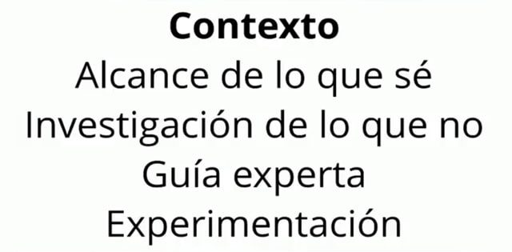Hay cinco elementos que tienes que hacer eventualmente una vez sabes lo que quieres aprender, el primero y el más importante es obtener contexto, esto significa entender qué es lo que no sabes qué no sabes.
Sabes que quieres aprender algo, sabes que quieres aprender a arreglar motores de carros, pero ¿cómo funciona eso? entonces tienes contexto. obtienes texto de que es un motor de combustión interna, de cómo funciona la gasolina, etc. Se puede obtener ese contexto.
Luego evalúas el alcance de lo que sabes, ok yo sabía que la gasolina cuando le prendo fuego explota y yo sabía que la explosión mueve un pistón, luego investigas lo que no! pero yo no sé cómo el pistón se vuelve movimiento de las ruedas, ah! existe una cosa llamada el diferencial.
Y por último y más importante, experimenta! rompe un motor, escribe código, dibuja, haz una campaña de marketing, crea un vídeo, graba un podcast, haz cosas! El mejor lugar para arrancar, obtener contexto, créelo o no, es la wikipedia.
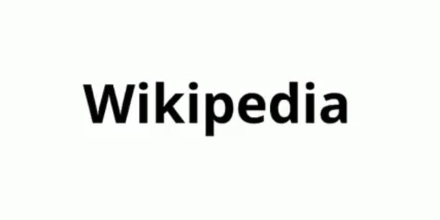La wikipedia es espectacular, es un sistema de editores súper estricto que hace que cualquier cosa que quieras aprender tenga un contexto desmenuzado. Y no te ha pasado que en ocasiones vas a investigar algo en la wikipedia y terminas 8 niveles abajo tratando de entender qué pasó con el cráneo de Hitler?
Esto es completamente posible, a todos nos pasa, nos perdemos en el agujero negro de la wikipedia y eso está bien! eso significa que tienes hambre de conocimiento! recuerda hablar con gente que sepa y si no tienes gente de tu alrededor, para eso esta internet!
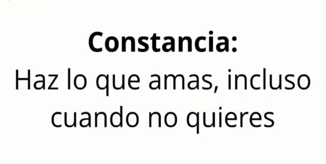Por último tienes que tener constancia, tienes que hacer lo que amas incluso cuando no quieres, porque son esos momentos que te retan, cuando tienes ese cansancio que no puedes con el, lo que realmente te ayuda a ir al siguiente nivel.
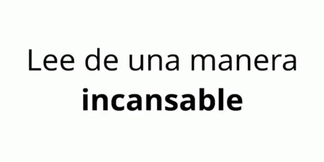Una vez que ustedes tienen maestría y les interesa cosas, tienen que leer de manera incansable, lean libros pesados de lo que les apasione, yo no creo mucho en los libros técnicos pero sí creo mucho en los libros tácticos y estratégicos, lean en internet, lean blogs, lean en formatos largos intenten evitar las cosas chiquitas.
Intenten leer cosas largas y profesionales porque cuando ustedes se comprometen con leer largo y completo, están llenándose de más contexto y el contexto eventualmente se conecta en el cerebro y genera mejor conocimiento.
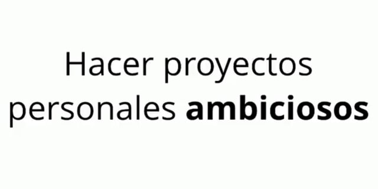Hagan proyectos personales ambiciosos. Sí a ustedes les interesa crear una película, si quieren ser productores audiovisuales hagan una película entera! hagan una película con efectos especiales aprendan Motion Graphics, aprendan After Effects, arriesguense con final Cut Pro.
Aprendan a profundidad cómo regular el audio, mantener una misma textura de iluminación, aprendan cómo grabar con un solo celular y que se vea increíble a pesar de solamente tener un lente y ser pobres y que el render se demore cuatro días, no importa!
Hagan proyectos ambiciosos en diseño, en marketing, en programación, en lo que sea! Y al principio ustedes van a decir esto no funciona, esto es.. esto es una mierda, pero es normal! son sus primeros proyectos, no se rindan!
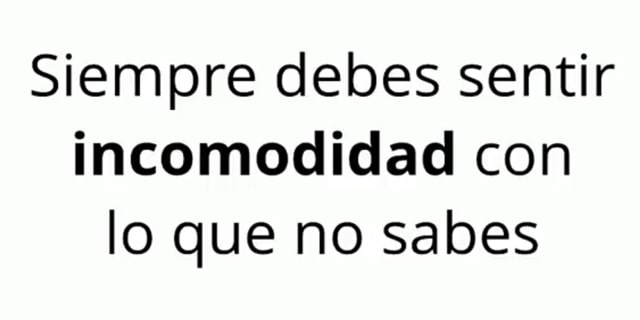Cuando sienten esa incomodidad de que son malos en algo, perdónense por ello y recuerden que siempre deben sentir esa incomodidad con lo que no saben, si están incómodos de que les hace falta aprender más, tienen la actitud correcta, porque siempre nos va a hacer falta algo.
El conocimiento humano y la tecnología avanza más rápido que la capacidad del cerebro de adaptarse, corre mucho más veloz, nuestra única opción es estar «OK» con esta incomodidad y nunca parar de aprender.
BoJack Horseman lo dice de una manera en mi opinión inspiradora, BoJack Horseman es una serie de Netflix que le recomiendo a todo el mundo, BoJack empieza a tratar de correr, pero correr le es muy difícil, BoJack empieza a decir, dios me arden los pulmones, odio esto, correr es terrible! Eventualmente BoJack se tira al lado de un potrero y dice, dios no puedo más, hasta que llega un mono sabio que le dice: “se hace más fácil, se hace más fácil cada día. pero tienes que hacerlo cada día. esa es la parte más difícil, pero se hace más fácil”.
Ponte una meta ambiciosa, dejá de estar rodeado de personas que te están arrastrando hacia abajo y rodeate de gente que lo único que quiere, es crecer.
Esa es la magia de PiensEnGrande no solamente un portal de aprendizaje y superación sino una comunidad de personas que en vez de decirte como no lo vas a lograr, sueñan con el mejor escenario para ti en un año, en cinco, en diez.
Imaginalo tú también y se parta este cuento.